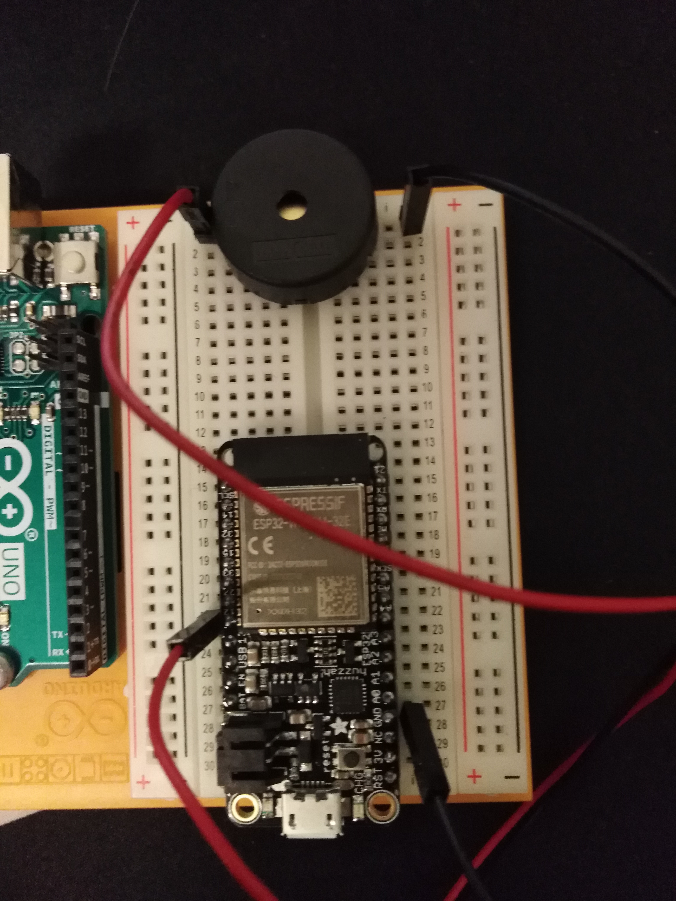

Controlling the screamer
ESP32
In this esp32 project I made a screamer which is remotely controlled. The project does not really have any applications other than scaring people if you place it somewhere or perhaps waking up people which sleep to long. In this case the esp32 will work as a webserver taking in orders of which frquency to play through a website.
What you need:
- esp32
- The arduino IDE
- Piezo or Buzzer
- BreadBoard
- Wires
How to make
Circuit
Firstly we can start by setting up circuit. Place the esp32 in the breadboard so that we can access all pins without different pins on the esp32 being connected in the breadboard. Thereafter place the esp32 in the breadboard and connect wire to the each of the different pins of the Piezo. It does not matter whoch way the wires are placed. One wire will ofcourse be connected to the GND pin on the esp32. The second wire should be connected to one of the GPIO of the esp32. In this case we use the 12th. Now that we have done this we can go on to the programming.
Programming
The arduino IDE will be needed to be installed. You will need to install the esp32 library in order to program the esp32. When this library is installed you can also program other esp32 devices. A simple guide install the library will be linked here. When the library and the esp32 model you are using as been choosen, we can now start programming the esp32.
In order to comminicate with the esp32 over internet you will need i to connect to the internet. For this I used the simple example from this source The example used of how to setting up a website that is hosted from the esp32, will be where we can communicate with the esp32 remotely from other devices connected to the same network as itself. I sat the website up to have a input box and a button. When a number is entered and button is pressed the site is redireceted to the same site but changes the URL giving it the number that was entered. When the redirect happens the esp32 get a HTTP request, saying that the client(being us on the other site), is asking for that URL. The redirecting is done with some intial javascript code which is also included in the website. Now we can read on the URL the number which was entered, and make the piezo play a certain frequecy. The pieoze is able to play a frequency from 50-10 000. To make it simple, the site client will enter a number from 1-9 which will be multiplied by 1000 and played by piezo under the controll of the esp32. Code can be found on my GitHub